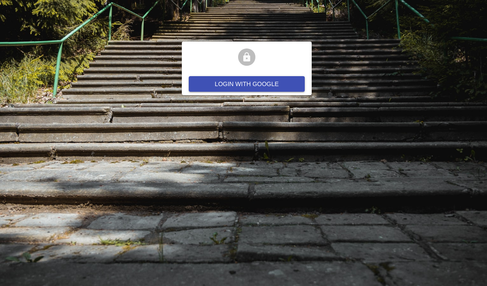

Advanced Tutorials
Creating a Record Related to the Current One
This tutorial explains how to add a button on a show or edit page to create a new resource related to the one displayed.

Custom Forms and UI for related records
This tutorial explains how to have a create, show or edit view of a referenced resource inside a modal or a sliding side panel.

Build a Timeline as a replacement for a List component
This tutorial shows how to use pure react to implement a custom component replacing react-admin default List.

Creating and Editing a Record From the List Page
This tutorial shows how to display Creation and Edition forms in a drawer or a dialog from the List page.

Add a User Profile Page
This tutorial explains how to create a profile page based on an <Edit> component, and accessible as a standalone page.

Supplying your own Defaults to React Admin
This article shows how you can customize many parts of the framework without repeating yourself.

OpenID Connect Authentication with React Admin

Changing The Look And Feel Of React-Admin Without JSX
This article shows how to customize react-admin look and feel using only the material-ui theme.